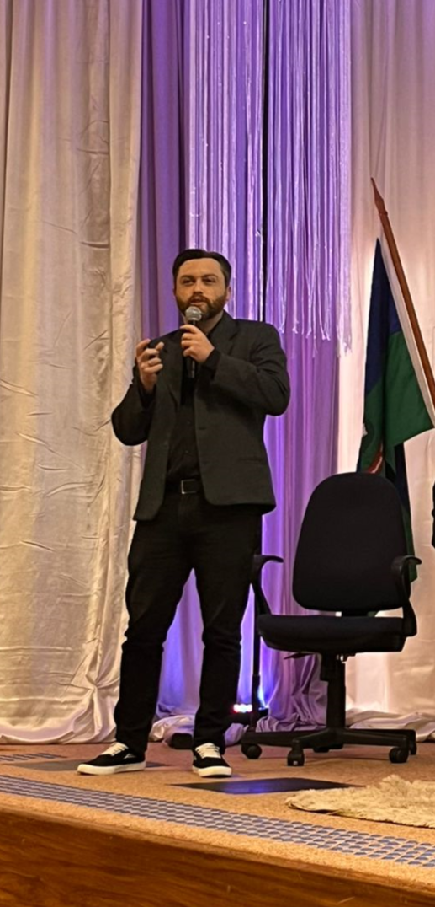

Psicologia
Graduação em Psicologia pela Universidade de Passo Fundo (UPF).
Sou o Dr. Eduardo Lima, psicólogo, e acredito que compreender o que estamos vivendo pode abrir caminhos para lidar com os desafios de maneira mais consciente. Meu trabalho busca oferecer um espaço de diálogo, respeito e atenção à história de cada pessoa.

Minha formação em Psicologia e meu Doutorado em Envelhecimento Humano contribuíram para ampliar meu olhar sobre as diferentes experiências e etapas da vida.
Ao longo da minha trajetória, também me dediquei à pesquisa, à avaliação psicológica e ao estudo de instrumentos e recursos digitais. Essas experiências fazem parte da maneira como compreendo a importância de uma atuação cuidadosa, responsável e fundamentada.
Mais do que uma formação ou técnica específica, considero importante compreender cada pessoa em sua singularidade, respeitando sua história, suas necessidades e seu momento de vida.
Uma trajetória dedicada à Psicologia, à compreensão das pessoas e ao desenvolvimento de recursos para a prática profissional.
Graduação em Psicologia pela Universidade de Passo Fundo (UPF).
Formação pela Universidade de Passo Fundo, com aprofundamento nos processos de envelhecimento humano.
Formação pela Universidade de Passo Fundo, voltada à pesquisa e à produção de conhecimento na área do envelhecimento humano.
Experiência em pesquisa científica, avaliação psicológica, psicometria e desenvolvimento de recursos digitais aplicados à Psicologia.
Minhas pesquisas e publicações abordam avaliação psicológica, envelhecimento humano, saúde mental e o uso de tecnologias na Psicologia.
Se você deseja conhecer as possibilidades de atendimento psicológico, entre em contato para esclarecer suas dúvidas.